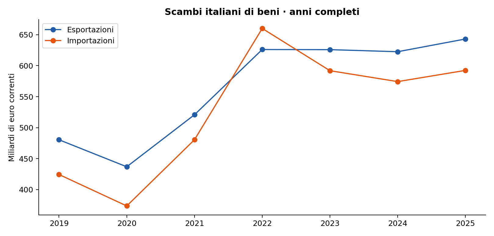
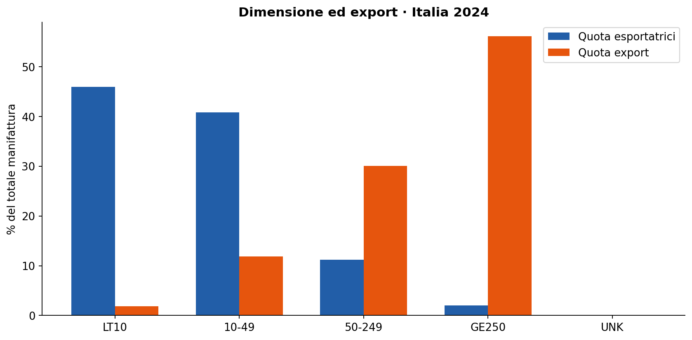
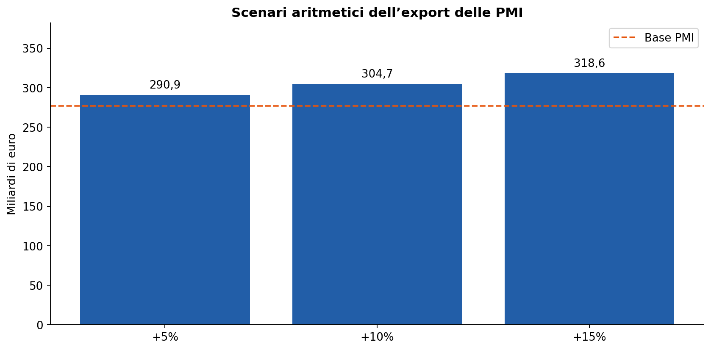
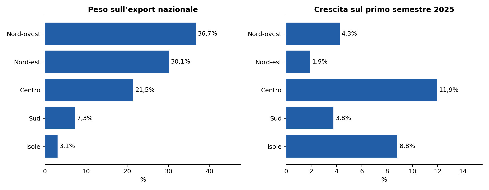
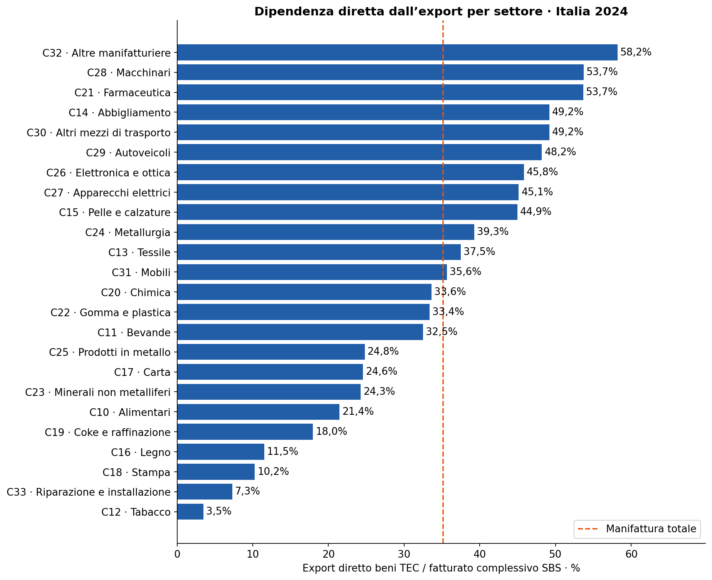
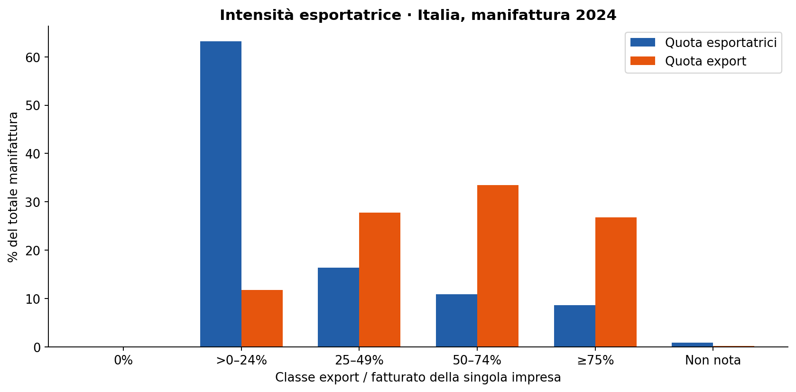
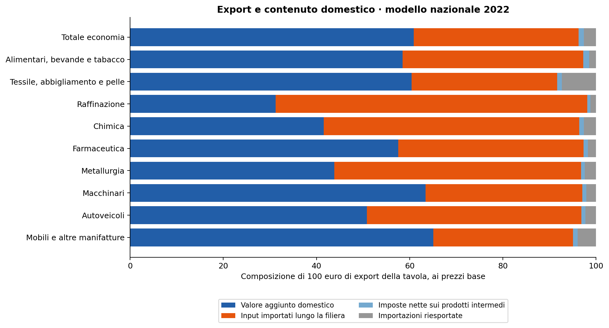
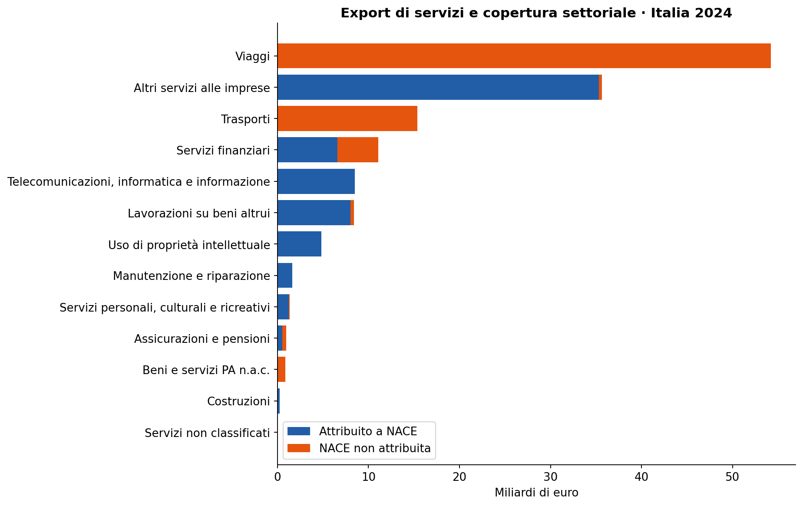
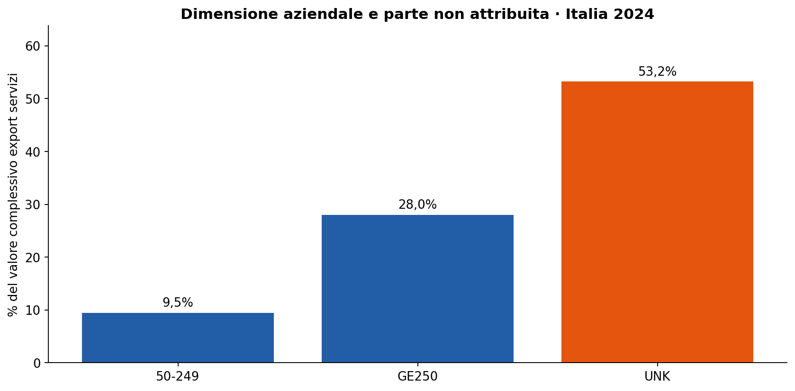
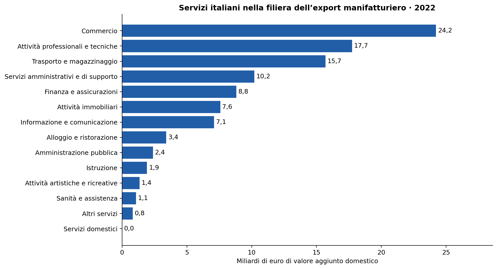

Chi esporta in Italia
Dimensione delle imprese, territori, settori e servizi
Paolo Volterra ![]()
Italiano. L’analisi descrive l’export italiano attraverso sei prospettive: andamento nazionale, dimensione delle imprese, scenari per le PMI, geografia produttiva, specializzazione settoriale e servizi. Le informazioni strutturali si riferiscono soprattutto al 2024; i dati territoriali e congiunturali arrivano al 2026. La concentrazione nelle grandi imprese convive con una forte eterogeneità settoriale e con il peso prevalente del Nord. Il valore esportato per impresa e la quota di fatturato realizzata all’estero misurano fenomeni diversi. Per i servizi, la parte non attribuita all’attività delle imprese limita i confronti settoriali. Una lettura input-output riferita al 2022 distingue il valore aggiunto domestico dagli input importati e misura il contributo dei servizi alle filiere esportatrici. Gli scenari di incremento dell’export sono esercizi aritmetici e non stime della crescita realizzabile.
English. The analysis describes Italian exports through six perspectives: national trends, firm size, scenarios for small and medium-sized enterprises, production geography, sectoral specialisation and services. Structural information mainly refers to 2024, while regional and short-term data extend to 2026. Concentration among large firms coexists with substantial sectoral heterogeneity and the North’s predominant share. Exports per firm and the share of turnover earned abroad measure different phenomena. For services, the share not allocated to firms’ economic activities limits sectoral comparisons. An input-output analysis for 2022 distinguishes domestic value added from imported inputs and measures the contribution of services to exporting supply chains. Export growth scenarios are arithmetic exercises rather than estimates of attainable growth.
esportazioni, imprese, PMI, manifattura, territori, servizi
L’export italiano presenta una struttura concentrata, ma la concentrazione cambia a seconda di ciò che si misura. Nella manifattura, le imprese con almeno 250 addetti rappresentano il 2,0% delle esportatrici e realizzano il 56,2% delle vendite estere di beni nel 2024. Nel primo semestre 2026 il Nord genera il 66,8% dell’export nazionale. Questi risultati descrivono due distribuzioni distinte: non quantificano, da soli, l’export delle grandi imprese localizzate al Nord. [1], [2]
L’analisi usa il 2024 per la struttura delle esportatrici e i rapporti con il fatturato; il 2025 per l’ultimo anno completo degli scambi; il 2026 per l’evoluzione più recente dei flussi e dei territori. Le relazioni di filiera sono valutate con la matrice input-output del 2022. Gli anni differenti rispondono alla diversa disponibilità delle statistiche e non sono trattati come osservazioni contemporanee. Tutti i valori monetari sono espressi a prezzi correnti, salvo gli indicatori esplicitamente riferiti ai volumi. Le classi dimensionali sono definite per addetti: microimprese sotto 10, piccole da 10 a 49, medie da 50 a 249 e grandi da 250 in su. Le PMI comprendono le prime tre classi; questa è una classificazione statistica per addetti.
1 Andamento nazionale: valori, volumi e saldo
Nel 2025 le esportazioni italiane di beni sono pari a 643,2 miliardi di euro, contro 622,6 miliardi nel 2024. Le importazioni del 2025 ammontano a 592,5 miliardi e il saldo commerciale è positivo per 50,7 miliardi. Il saldo è la differenza fra esportazioni valutate FOB e importazioni valutate CIF, secondo i criteri illustrati di seguito; non misura il valore aggiunto generato dalle sole esportatrici. [3], [4]
1.1 Valutazione delle merci: FOB e CIF
Nelle statistiche del commercio di beni, le esportazioni sono valutate FOB (Free On Board) e le importazioni CIF (Cost, Insurance and Freight). Per l’Italia, paese dichiarante, entrambe le valutazioni sono riferite alla frontiera nazionale, di uscita per le esportazioni e di ingresso per le importazioni; cambiano i costi accessori inclusi. [5]1
| Criterio | Frontiera di valutazione | Trasporto e assicurazione inclusi |
|---|---|---|
| FOB — esportazioni | Paese esportatore | Costi fino alla frontiera del paese esportatore |
| CIF — importazioni | Paese importatore | Costi fino alla frontiera del paese importatore, incluso il tragitto internazionale |
In parole semplici: Lo stesso bene può avere un valore CIF superiore al valore FOB perché incorpora ulteriori costi di trasporto e assicurazione.
Esempio ipotetico. Si assume un valore di 100 euro alla frontiera del paese esportatore e un costo aggiuntivo di 5 euro per trasporto e assicurazione fino alla frontiera del paese importatore. Il valore FOB è 100 euro e il valore CIF è 105 euro. Gli importi illustrano la convenzione e non rappresentano una stima dei costi effettivi del commercio italiano.
Il saldo commerciale qui presentato è quindi export FOB meno import CIF, come nelle serie Eurostat degli scambi totali per paese dichiarante. [6] A parità delle altre componenti, valutare anche le importazioni FOB le ridurrebbe dei costi fra le due frontiere e aumenterebbe il saldo. Non viene applicata alcuna correzione percentuale convenzionale ai dati: occorrerebbe misurare quei costi. [5]
Il criterio di valutazione è distinto dal contenuto domestico delle vendite: un valore FOB può comprendere input importati. Le tavole input-output utilizzate più avanti sono ai prezzi base e richiedono il proprio raccordo contabile; i loro valori non sono sostituiti ai flussi commerciali FOB/CIF. [7]
1.2 Scambi e dinamica recente

In parole semplici: Il saldo dipende dall’andamento di entrambi i flussi. Un avanzo può aumentare anche se le importazioni rallentano; per valutarlo occorre osservare esportazioni e importazioni insieme.
| Periodo | Export, mld € | Import, mld € | Saldo, mld € |
|---|---|---|---|
| 2024 | 622,6 | 574,3 | 48,3 |
| 2025 | 643,2 | 592,5 | 50,7 |
| Gen–ago 2025 | 422,9 | 390,4 | 32,5 |
| Gen–ago 2026 | 444,0 | 409,3 | 34,7 |
In parole semplici: Il confronto fra i due periodi gennaio–agosto misura la crescita su una finestra omogenea. Un anno completo e otto mesi non vanno confrontati per valutare una variazione annuale.
Nei primi otto mesi del 2026 le esportazioni raggiungono 444,0 miliardi, con una crescita del 5,0% rispetto allo stesso periodo del 2025. Le importazioni crescono del 4,8% e il saldo sale da 32,5 a 34,7 miliardi. [3]
Il miglioramento in valore va distinto dall’evoluzione delle quantità. Nel periodo gennaio–agosto 2026, la variazione dei volumi esportati è 0,5%, mentre quella del valore monetario è 5,0%. Nel solo agosto, l’aumento in valore è 9,0% e quello in volume 1,9%. Prezzi e composizione delle vendite contribuiscono quindi alla distanza fra le due misure; non è corretto interpretare l’intero incremento monetario come aumento delle quantità o della competitività. [8]2
2 Dimensione delle imprese e concentrazione dell’export
Le statistiche annuali della manifattura individuano 75.059 imprese esportatrici nel 2024. Le grandi imprese realizzano il 56,2% dell’export; le medie, con 50–249 addetti, il 30,1%. Micro e piccole imprese insieme pesano per 86,8% sul numero delle esportatrici e per 13,7% sul valore esportato: la prevalenza numerica non si traduce in una prevalenza nel valore delle vendite estere. [1]

In parole semplici: Le imprese più piccole sono numerose; le grandi concentrano le vendite. Le due barre descrivono il numero delle esportatrici e il valore esportato, non due misure alternative della stessa grandezza.
2.1 Scala commerciale e intensità delle vendite estere
L’export medio per impresa cresce con la classe dimensionale: misura la scala delle vendite estere, non la loro importanza rispetto al fatturato. Una diversa domanda riguarda quanta parte del fatturato sia venduta all’estero. Una grande azienda può esportare molto in euro e mantenere una quota elevata di vendite domestiche; una piccola azienda specializzata può dipendere fortemente da clienti stranieri.
La coorte ICE delle imprese che hanno esportato in ciascun anno del triennio 2022–2024 comprende 84.359 unità, appartenenti a diversi settori economici. Per questa popolazione, la tavola strutturale consente di affiancare la scala delle vendite e la propensione all’export, facendo attenzione agli anni: le esportazioni e le medie qui riportate si riferiscono al 2024, mentre il rapporto export/fatturato è riferito al 2022. Anche le caratteristiche strutturali e le classi dimensionali della coorte sono riferite al 2022. [9, pp. 171–174]
| Classe | Imprese della coorte | Export medio 2024, mln € | Export/fatturato 2022, % |
|---|---|---|---|
| Microimprese | 40.524 | 0,64 | 26,5 |
| Piccole imprese | 31.909 | 2,66 | 25,4 |
| Medie imprese | 9.972 | 16,65 | 31,8 |
| Grandi imprese | 1.954 | 142,78 | 31,5 |
In parole semplici: Il divario nelle vendite medie per impresa è molto più ampio di quello fra le quote di fatturato esportate. I dati di propensione riguardano il 2022 e non devono essere letti come misure aggiornate al 2024.
Le propensioni all’export del 2022 sono comprese fra 25,4% e 31,8% nelle quattro classi. Nella stessa coorte, le medie esportatrici hanno una propensione lievemente superiore a quella delle grandi. La relazione fra dimensione e valore esportato è dunque diversa dalla relazione fra dimensione e dipendenza dal fatturato estero. Questi confronti descrittivi non separano l’effetto della dimensione da quello del settore, della produttività o dell’organizzazione aziendale. [9, pp. 173–174]
La coorte persistente e la popolazione annuale della manifattura non coincidono. La prima seleziona imprese presenti sui mercati esteri lungo un triennio e comprende anche commercio e altri settori; la seconda osserva le esportatrici manifatturiere di un singolo anno. Le rispettive quote dimensionali rispondono quindi a domande differenti.
3 Scenari per le PMI: vendite aggiuntive e nuovi esportatori
La crescita può avvenire attraverso l’aumento delle vendite delle imprese già esportatrici oppure attraverso l’ingresso di nuove aziende. Le due possibilità richiedono misure diverse: un incremento percentuale dell’export si applica a un valore monetario; un ampliamento della platea si applica a un numero di imprese. Nessuna delle due operazioni, da sola, stima la probabilità che il risultato si realizzi.
Nella coorte persistente ICE, le micro, piccole e medie imprese realizzano complessivamente 277 miliardi di euro di esportazioni nel 2024. Applicando a questa base incrementi ipotetici del 5%, 10% e 15% si ottengono i seguenti ordini di grandezza. [9, p. 173]
| Incremento ipotetico | Export aggiuntivo, mld € | Export risultante, mld € |
|---|---|---|
| +5% | 13,9 | 290,9 |
| +10% | 27,7 | 304,7 |
| +15% | 41,6 | 318,6 |
In parole semplici: Gli importi aggiuntivi dipendono dall’incremento assunto. La tabella non attribuisce una probabilità agli scenari e non dimostra che la capacità produttiva o la domanda siano sufficienti a realizzarli.

In parole semplici: Le barre rappresentano il valore complessivo nello scenario. La differenza dalla linea di base è la vendita estera aggiuntiva ipotizzata.
Gli incrementi simulati sono vendite lorde all’estero. L’eventuale effetto sul prodotto interno lordo dipende dal valore aggiunto domestico e dagli input importati necessari per produrre quelle vendite. Le percentuali uniformi non incorporano differenze nella domanda, nella specializzazione, nella capacità produttiva e nell’accesso ai mercati. Per questo gli scenari esprimono una sensibilità aritmetica della base esportata, non un potenziale economico già misurato.
Per l’ingresso di nuovi esportatori, occorre anzitutto definire una base coerente: imprese che esportano in un anno, operatori doganali e imprese presenti stabilmente sui mercati esteri sono popolazioni differenti. L’ingresso occasionale di un’impresa non è equivalente al consolidamento di vendite ripetute nel tempo. Una valutazione delle politiche dovrebbe quindi osservare la persistenza delle nuove esportatrici e il valore delle loro vendite, oltre al numero degli ingressi. Non viene proposto uno scenario numerico di ampliamento della platea in assenza di una base complessiva allineata per anno e definizione.
4 Geografia dell’export: peso dei territori e dinamica recente
Nel primo semestre 2026 l’export nazionale di beni è pari a 337,2 miliardi, in crescita del 4,5% sul primo semestre 2025. Il Nord-ovest e il Nord-est ne realizzano insieme il 66,8%. Il peso territoriale e la variazione percentuale raccontano aspetti diversi. Il Centro registra una crescita più rapida del Nord, pur mantenendo una quota inferiore del valore complessivo esportato. [2]
| Ripartizione | Export, mld € | Quota Italia, % | Variazione annua, % |
|---|---|---|---|
| Nord-ovest | 123,6 | 36,7 | 4,3 |
| Nord-est | 101,6 | 30,1 | 1,9 |
| Centro | 72,4 | 21,5 | 11,9 |
| Sud | 24,8 | 7,3 | 3,8 |
| Isole | 10,3 | 3,1 | 8,8 |
| Altre attribuzioni territoriali | 4,6 | 1,4 | -28,1 |
| Italia | 337,2 | 100,0 | 4,5 |
In parole semplici: Le aree con più esportazioni possono crescere meno rapidamente di aree più piccole. La quota delle attribuzioni territoriali diverse resta visibile e non viene ripartita arbitrariamente fra le cinque aree.

In parole semplici: Il primo pannello misura quanto conta ciascuna area nel totale; il secondo indica quanto sono cambiate le vendite rispetto allo stesso semestre dell’anno precedente.
La crescita delle cinque grandi ripartizioni non implica che tutte le regioni crescano. Fra le regioni, Basilicata e Toscana registrano rispettivamente 29,5% e 23,8%; Friuli-Venezia Giulia e Lazio mostrano invece -9,6% e -6,8%. Le differenze percentuali risentono della base di confronto e della struttura produttiva: non consentono, isolate dai valori iniziali e dai comparti coinvolti, di ordinare la competitività regionale. [2]
Il territorio di origine delle merci e il paese di destinazione sono due dimensioni diverse. Il peso del Nord non identifica i mercati esteri serviti dalle imprese, né la destinazione finale dei beni che transitano attraverso intermediari. Le evidenze territoriali qui presentate non consentono inoltre di isolare l’incrocio fra dimensione aziendale, settore e regione. Attribuire il dato nazionale delle grandi imprese alle sole regioni settentrionali richiederebbe un’analisi congiunta di queste caratteristiche.
5 Specializzazione settoriale e intensità esportatrice
La dipendenza dall’estero varia fra le attività economiche. Il rapporto fra export diretto di beni attribuito alle imprese manifatturiere e fatturato complessivo della manifattura è 35,2% nel 2024. Fra le divisioni, il rapporto è 53,70% nei macchinari, 53,67% nella farmaceutica e 21,44% negli alimentari. [10], [11]
Questo indicatore richiede una definizione precisa. Il numeratore riguarda merci esportate direttamente da imprese identificate; il denominatore comprende il fatturato di tutte le imprese del settore, incluse quelle che non esportano. L’attività economica è quella dell’impresa esportatrice ed è classificata secondo la nomenclatura europea NACE. Questa classificazione riguarda ciò che fa prevalentemente l’impresa e va distinta dalla classificazione merceologica del prodotto esportato. Le statistiche sul commercio per caratteristiche d’impresa considerate in questa sezione riguardano i beni. [12]3

In parole semplici: Le attività manifatturiere presentano rapporti molto diversi fra vendite estere dirette e fatturato totale. La linea di riferimento riguarda l’intera manifattura; la categoria delle altre manifatture riunisce attività eterogenee.
Il rapporto non coincide con la propensione media delle sole esportatrici e non misura le vendite indirettamente destinate all’estero attraverso intermediari italiani. Il suo complemento a cento non può essere interpretato automaticamente come quota di fatturato destinata al mercato domestico. Il confronto combina due popolazioni statistiche aggregate e non costituisce un conto aziendale consolidato sullo stesso insieme di unità. Questi limiti sono particolarmente importanti quando si confrontano settori con canali distributivi diversi.
5.1 Distribuzione delle imprese per intensità esportatrice
Una misura complementare classifica ciascuna esportatrice in base alla quota di fatturato venduta all’estero. Essa distingue chi esporta una parte limitata delle proprie vendite da chi dipende prevalentemente dai mercati esteri. Le quote di imprese attribuiscono lo stesso peso a ogni azienda; le quote di export pesano invece il valore venduto. [13]

In parole semplici: Molte imprese esportano meno di un quarto del fatturato, ma le classi più orientate all’estero concentrano gran parte del valore esportato. La quota con intensità non nota resta nel totale.
Le imprese manifatturiere che esportano almeno metà del fatturato rappresentano il 19,5% delle esportatrici, ma realizzano il 60,2% dell’export manifatturiero osservato. La concentrazione delle vendite riguarda dunque anche l’intensità dei rapporti con l’estero, oltre alla dimensione aziendale. [13]
Le due classificazioni non sono intercambiabili. Le tavole considerate non consentono di attribuire ogni classe di intensità a una specifica dimensione aziendale, e non dimostrano che le aziende più dipendenti dall’estero coincidano necessariamente con quelle più grandi. Non è inoltre possibile ricavare una propensione media esatta assegnando a ogni intervallo un valore centrale arbitrario.
5.2 Valore aggiunto domestico e forniture lungo la filiera
Le esportazioni lorde comprendono il valore degli input utilizzati per produrle. La matrice input-output consente di separare il contributo della produzione italiana dagli acquisti intermedi importati e di individuare i settori fornitori delle branche esportatrici. La lettura qui proposta utilizza le tavole simmetriche nazionali a 63 branche del 2022, ai prezzi base, distinguendo impieghi totali e importati. I prezzi base misurano il valore ricevuto dal produttore, al netto delle imposte sui prodotti e comprensivo degli eventuali contributi; il perimetro di valutazione differisce da quello delle statistiche doganali. Le grandezze seguenti non sono quindi un aggiornamento al 2024 o al 2026 dei valori commerciali presentati sopra. [7]
Nel modello nazionale, il valore aggiunto domestico direttamente e indirettamente associato all’export è 401,5 miliardi di euro, a fronte di 659,7 miliardi di esportazioni valutate nella tavola. Le importazioni utilizzate come input intermedi pesano per 233,6 miliardi. A queste si aggiungono le importazioni direttamente riesportate e le imposte nette sui prodotti intermedi lungo la filiera. [7]
| Componente | Miliardi di euro |
|---|---|
| Valore aggiunto domestico | 401,5 |
| Input intermedi importati lungo la filiera | 233,6 |
| Imposte nette sui prodotti intermedi | 7,1 |
| Importazioni direttamente riesportate | 17,5 |
| Totale export della tavola | 659,7 |
In parole semplici: Una parte del valore esportato remunera lavoro e capitale nella produzione italiana; una parte corrisponde ad acquisti importati. Le imposte nette e le merci importate e riesportate sono tenute separate per rendere coerente la somma delle componenti.

In parole semplici: A parità di valore esportato, le branche incorporano quote diverse di valore aggiunto italiano e di input importati. Il confronto riguarda la struttura e i prezzi del 2022 e non misura una graduatoria di competitività attuale.
Il calcolo segue la domanda estera rivolta alla produzione interna attraverso tutti i fornitori nazionali. La matrice dei coefficienti di produzione comprende soltanto gli input domestici; le importazioni direttamente riesportate sono sottratte prima di calcolare l’attivazione della produzione italiana. Il valore aggiunto di ciascuna branca è poi rapportato alla sua produzione e applicato alla produzione direttamente e indirettamente associata alla domanda estera. Le imposte nette sui prodotti intermedi rimangono separate dal valore aggiunto ai prezzi base. [7]
Gli input importati non sono chiamati automaticamente “valore aggiunto estero”. Una matrice nazionale non ne ricostruisce l’origine per paese e non separa l’eventuale valore aggiunto italiano rientrato attraverso le importazioni. Per una scomposizione internazionale completa servono tavole inter-paese.
5.2.1 Scenari condizionati dalla struttura produttiva
Un esercizio unitario consente di distinguere il valore delle vendite dall’attivazione economica associata. Si ipotizza un miliardo di euro di domanda estera aggiuntiva rivolto alla produzione interna di una singola branca, mantenendo coefficienti tecnici e prezzi del 2022. Non si tratta di un miliardo di maggiori esportazioni composto liberamente da produzioni italiane e riesportazioni.
| Branca destinataria | Valore aggiunto, mln € | Input importati, mln € | Imposte nette, mln € |
|---|---|---|---|
| Raffinazione | 316,2 | 677,0 | 6,8 |
| Macchinari | 647,4 | 344,1 | 8,5 |
| Informatica e servizi di informazione | 843,6 | 139,7 | 16,7 |
In parole semplici: Lo stesso aumento ipotetico delle vendite attiva importi diversi di valore aggiunto e acquisti importati a seconda della branca. Le righe descrivono tre ipotesi separate e non tre previsioni di crescita.
L’esercizio assume disponibilità di capacità produttiva, rapporti costanti fra input e produzione e assenza di reazioni dei prezzi. Non incorpora spiazzamento della domanda domestica, sostituzioni fra fornitori, vincoli finanziari o effetti successivi della spesa dei redditi generati. Il valore aggiunto risultante non è una stima causale dell’effetto di un incentivo o una previsione dell’aumento del PIL. In particolare, questi coefficienti non vengono applicati ai 277 miliardi della coorte di PMI: tale passaggio richiederebbe una distribuzione settoriale coerente delle vendite aggiuntive e ipotesi sulle differenze produttive per dimensione aziendale.
6 Export di servizi e limiti dei confronti settoriali
Le vendite internazionali comprendono anche i servizi: fra questi vi sono viaggi, trasporti, servizi alle imprese, attività finanziarie e informatiche. Occorre distinguere il servizio venduto dall’attività principale dell’impresa che lo vende. Una manifatturiera può esportare servizi, mentre un’impresa commerciale può esportare beni. Le statistiche sui servizi per caratteristiche d’impresa assumono l’impresa come unità statistica. [14]4
Nel 2024 l’export italiano di servizi ammonta a 143,1 miliardi di euro. I viaggi valgono 54,2 miliardi, gli altri servizi alle imprese 35,6 miliardi e i trasporti 15,4 miliardi. Queste categorie classificano il contenuto della vendita e non corrispondono automaticamente a un settore aziendale. [15]

In parole semplici: Il valore nazionale dei servizi comprende anche flussi che non possono essere assegnati all’attività delle imprese. I segmenti non attribuiti restano esportazioni effettive e non devono essere interpretati come assenza di vendite.
Il 53,2% del valore esportato non è attribuito a una NACE nella tavola delle caratteristiche delle imprese. I prodotti viaggi e trasporti risultano interamente nella voce non attribuita. La metodologia italiana segnala difficoltà di collegamento alle caratteristiche aziendali per queste attività e per alcune componenti dei servizi finanziari. [15], [16]
Questa copertura impedisce una graduatoria completa della dipendenza dall’export di servizi per settore. Assegnare automaticamente i viaggi ad alloggio e ristorazione o tutti i trasporti alla sezione trasporto e magazzinaggio introdurrebbe una corrispondenza non presente nei dati. Il rapporto relativo a trasporto e magazzinaggio è pertanto sospeso; non si propone un rapporto per l’aggregato eterogeneo che comprende alloggio e ristorazione.
Per alcune sezioni compatibili con il fatturato strutturale è invece possibile mostrare il rapporto fra i servizi effettivamente attribuiti e il fatturato complessivo del settore. Si tratta di un indicatore parziale: non rappresenta una stima completa delle vendite estere e non ricostruisce il rapporto delle sole imprese esportatrici. [11], [17]
| Attività | Servizi attribuiti, mld € | Servizi attribuiti/fatturato, % |
|---|---|---|
| Manifattura | 20,9 | 1,7 |
| Commercio | 8,4 | 0,7 |
| Informazione e comunicazione | 10,0 | 7,6 |
| Attività professionali, scientifiche e tecniche | 12,8 | 7,1 |
| Servizi amministrativi e di supporto | 2,9 | 2,2 |
In parole semplici: Le percentuali riguardano soltanto le vendite estere riconducibili alle attività indicate. Non consentono di confrontare la dipendenza complessiva dall’estero dei settori, perché una parte dell’export resta senza attribuzione.

In parole semplici: La parte senza dimensione aziendale nota è la maggiore. Le quote osservate per piccole, medie e grandi imprese non bastano quindi a descrivere la concentrazione di tutto l’export di servizi.
6.1 Servizi incorporati nelle esportazioni manifatturiere
Le vendite dirette all’estero non esauriscono il contributo dei servizi all’internazionalizzazione. Un’impresa di servizi può vendere a una manifatturiera italiana e concorrere alla produzione di un bene che sarà esportato. In questo caso il collegamento con la domanda estera passa attraverso la filiera nazionale.
Nel modello input-output del 2022, l’export delle branche manifatturiere è associato a 290,9 miliardi di valore aggiunto domestico. Di questi, 102,3 miliardi provengono da branche italiane dei servizi, pari al 35,2% del valore aggiunto domestico associato all’export manifatturiero. La coincidenza con il rapporto export/fatturato della manifattura presentato in precedenza è soltanto numerica: le due percentuali misurano grandezze diverse. Il denominatore è il valore aggiunto della filiera nazionale, non il fatturato delle imprese né il valore lordo esportato. [7]

In parole semplici: Il contributo dei servizi alle esportazioni di beni emerge anche quando la vendita del servizio avviene fra imprese residenti in Italia. Gli importi rappresentano valore aggiunto e non fatturato esportato direttamente.
Questa misura completa quella delle esportazioni dirette di servizi, ma non viene sommata ai loro valori lordi: cambiano la grandezza economica, il perimetro e l’anno di riferimento. Le branche dei servizi sono definite dalle attività economiche da commercio a servizi domestici; l’attivazione può comprendere più passaggi fra fornitori. I servizi svolti all’interno di un’impresa manifatturiera rimangono nel valore aggiunto della sua branca: la classificazione per attività non separa automaticamente progettazione, gestione o altre funzioni interne.
La prospettiva input-output non redistribuisce alle imprese, alle loro classi dimensionali o ai territori l’export di servizi non attribuito nelle statistiche precedenti. Fornisce una misura nazionale delle relazioni produttive fondata su una diversa base contabile. Il risultato mostra perché il ruolo economico dei servizi nell’export di beni può essere rilevante anche senza una corrispondente vendita diretta del servizio all’estero.
Conclusioni
Le evidenze presentate suggeriscono una lettura articolata dell’internazionalizzazione italiana. La concentrazione nelle grandi imprese e nel Nord è rilevante, ma non esaurisce le differenze fra settori e fra intensità delle vendite estere. Gli indicatori monetari, le quantità, il numero di esportatrici e la quota di fatturato venduta all’estero devono essere interpretati separatamente. Le proposte rivolte alle PMI acquistano contenuto economico quando tengono conto della specializzazione e della persistenza sui mercati; un incremento uniforme applicato a una base aggregata resta un esercizio aritmetico. La matrice input-output rende osservabili le relazioni fra esportazioni, forniture domestiche e valore aggiunto, comprese quelle che coinvolgono servizi venduti a esportatrici italiane. Per i servizi, il valore complessivo è osservabile, mentre il raccordo alle caratteristiche aziendali richiede una copertura maggiore prima di sostenere confronti settoriali completi.
Riferimenti
Nota metodologica
Questo documento nasce dall’interazione di tre componenti. L’autore definisce le domande, esercita il giudizio critico e assume la responsabilità scientifica ed editoriale del risultato. Strumenti di intelligenza artificiale generativa sono impiegati a supporto della ricerca bibliografica, della lettura, della sintesi, della riorganizzazione argomentativa e della revisione del testo. Un’infrastruttura open source sviluppata dall’autore automatizza il reperimento, l’armonizzazione e il controllo dei dati dalle fonti statistiche ufficiali, e mantiene l’elaborazione documentata e riproducibile.
Le fonti sono pubblicamente accessibili e citate con la loro denominazione ufficiale; l’analisi è pertanto integralmente auditabile e replicabile da terzi a partire da esse. Le tabelle e i grafici sono elaborazioni dell’autore: calcoli, aggregazioni, trasformazioni e scelte di rappresentazione sono attribuibili all’autore e non agli enti produttori dei dati.
La responsabilità per le fonti utilizzate, le analisi condotte, le elaborazioni effettuate, le interpretazioni proposte e le conclusioni formulate resta interamente in capo all’autore. L’intelligenza artificiale è stata impiegata come ambiente di supporto cognitivo ed editoriale, non come fonte primaria, autore autonomo o sostituto del giudizio critico.
Note
«It is said to be a FOB (Free On Board) valuation for exports and a CIF (Cost Insurance Freight) valuation for imports.» [5, p. 2]↩︎
«Ad agosto 2026 l’export cresce su base annua del 9,0% in valore e dell’1,9% in volume.» [8, p. 1]↩︎
«However, the scope of TEC is limited to the trade in goods.» [12, p. 3]↩︎
«STEC use the enterprise as a statistical unit.» [14, p. 2]↩︎